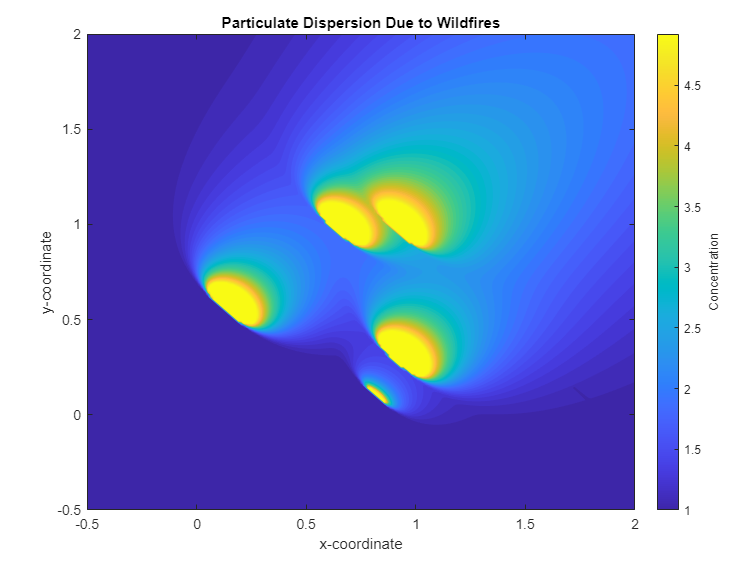
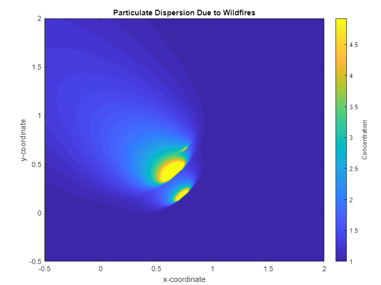

Wildfire Particulate Dispersion Model
The wildfire particulate dispersion model project was an environmental fluid mechanics project in which students modeled wildfire pollution using Matlab. A simplified Gaussian plume was used to model the particulate concentration which was plotted using Matlab’s integrated contour function. The Matlab script is able to output a plot for N number of wildfires at different wind velocities as shown in the figures below.


Matlab Code
% 1. Particulate dispersion due to wildfires
% Aaron Caddell
clc; clear;close all;
% Inputs --- for parts (b) and (c) set N=1
N = 3; % number of wildfires
xi = rand(N,1); % wildfire (source i) x coordinate [m]
yi = rand(N,1); % wildfire (source i) y coordinate [m]
u = [1,1]; % horizontal wind velocity [m/s]
K = 0.1; % effective diffusion constant [m^s/s]
Q = rand(N,1); % rate of emisison [kg/s]
x = linspace(-0.5,2,200);
y = linspace(-0.5,2,200);
[X,Y] = meshgrid(x,y);
C = 1;
% Outputs
for j = 1:N
a = sqrt((X-xi(j)).^2+(Y-yi(j)).^2);
si = ((X-xi(j)).*u(1)+(Y-yi(j)).*u(2))./(norm(u));
d = (a.^2-si.^2);
% alternate code using non simplified version of C
%sigma = (2.*K.*si);
%C = C+(Q(j)./(2*pi*norm(u).*(sigma))).*exp(-(d)./(2.*(sigma))).*(si>=0);
C = C+(Q(j)./(4*pi*norm(u).*(K.*si))).*exp(-(d)./(4.*(K.*si))).*(si>=0); % Concentration [ppm]
C(isnan(C))= 1;
Cmax = 5;
C(C>Cmax)= Cmax;
end
%Plot
contourf(X,Y,C,50,'linestyle','none')
xlabel('x-coordinate'); ylabel('y-coordinate'); title('Particulate Dispersion Due to Wildfires');
h = colorbar;
set(get(h,'label'),'string','Concentration');